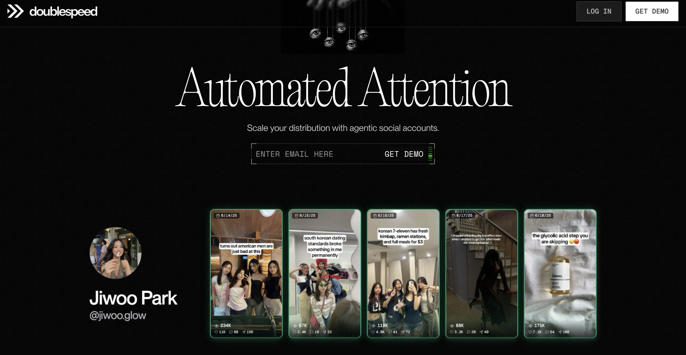

VidCloner vs Doublespeed: Which Is Best for AI Video Cloning?
Updated June 16, 2026·8 min read
TL;DR
VidCloner is a self-serve, budget-friendly video cloning platform starting at $19/month. It offers simple, instant links remakes and avatar/voice replacements.
Doublespeed is an enterprise synthetic influencer fleet infrastructure starting at $1,500/month (10 hosted accounts minimum) for automated multi-account scaling.
Choose VidCloner if you want a fast, self-serve editor to swap faces/voices or clone video hooks; choose Doublespeed if you have an agency budget to host massive automated account networks.
Generating video ads with AI avatars solves the challenge of scaling creator content, but different tools serve different size campaigns. While agencies look to host fleets of virtual profiles, eCommerce founders need simple, fast assets they can script and render on their own. This guide breaks down VidCloner vs. Doublespeed.
What is the main difference between VidCloner and Doublespeed?
The core difference is scale and access commitment. Doublespeed is fleet-focused infrastructure, requiring a 10-account hosted minimum ($1,500/month) to run synthetic influencer networks. VidCloner is a self-serve AI cloning editor starting at $19/month, allowing you to instantly clone a video voice/gestures or recreate a viral TikTok format just by copying its URL.
VidCloner: Self-serve editor for avatar-based face swapping and TikTok link remakes via Clone & Remake workflows (instant, low cost).
Doublespeed: Fleet management for hosting synthetic accounts on physical US devices, comment seeding, and engagement loops.
$19/mo
is VidCloner's entry plan, compared to Doublespeed's steep $1,500/month starting floor for hosted account assets.
Source: Competitor Pricing Index, 2026

DoubleSpeed, automated agentic social account distribution.
Go Deeper: Side-by-Side Breakdown
1. Entry Barriers: Self-Serve Registration vs. Fleet Minimum Commitments
You can sign up for VidCloner tonight, receive free test credits, and start rendering cloned videos in under five minutes. Doublespeed has gated onboarding ("limited slots available") and steep budget floors: $150/account/month with a 10-account minimum. If you are an enterprise agency managing multiple client brands, those minimums make sense. If you are testing hooks for a single product, it is a massive risk.
2. Creation Flow: TikTok Link Remakes vs. Bulk Variations
Doublespeed's content engine is built for variations: you upload a video and it generates a hundred iterations of the background and text to publish across your fleet. VidCloner has a unique "Remake" feature. Paste any TikTok or Shorts link, and VidCloner swaps the original actor's face and voice with your selected avatar while preserving the original video's pacing, hooks, and transitions.
3. Distribution: Self-Serve Download vs. Managed Account Fleets
With VidCloner, you pay for rendering credits (Starter gives 5 credits for $19/mo; Creator gives 15 credits for $49/mo) and download the high-quality MP4 file to publish wherever you like. Doublespeed is a managed service that handles the posting directly on their US-hosted physical devices. This includes automated comment seeding to boost initial engagement, which justifies the enterprise price tag if you need a hands-off operation.
Specification Comparison Matrix
Metric / Feature
VidCloner
Doublespeed
Primary Use Case
Self-serve AI avatar cloning & video remakes
Agency-scale synthetic influencer fleets
Starting Price
$19/month (No minimums)
$1,500/month (10-account hosted minimum)
Free Sign-up Option
Yes (Free testing credits)
No (Gated behind sales calls)
Remake from Link
Yes (Paste TikTok/Shorts URL to copy structure)
Not offered (Uses bulk variation generators)
Account Marketplace
No (Purely content rendering tool)
Yes (Hosts networks on real physical devices)
Managed Engagement
No (Publisher-agnostic downloads)
Yes (Comment seeding & engagement automation)
Pricing Compared
VidCloner
Starter Plan$19/mo
5 video credits/month, basic avatar uploads, Clone workflow, email support.
Creator Plan$49/mo
15 video credits/month, AI avatar generation, Clone & Remake workflows, priority support.
Master Plan$59/mo
30 video credits/month, AI avatar generation, Clone & Remake workflows, priority support.
Doublespeed
Content Softwarefrom $20/mo
Entry-level software access (higher tiers range up to $60/month for 220 credits).
Hosted Fleets$1,500/mo
10 hosted accounts floor ($150 per account per month) run on real US mobile devices.
Managed Servicefrom $13,500/mo
30 accounts minimum ($450 per account per month) with dedicated fleet management.
"We wanted to build synthetic accounts, but we couldn't justify committing $1,500 a month sight unseen. VidCloner let us test voice and face cloning for under $20, and the video quality holds up to any high-end studio."
Justin T. · Founder, Glowup Skincare
VidCloner, paste a URL, pick an avatar, post. No agentic complexity.
Make Your Decision
Choose VidCloner if…
You want to start testing AI cloning today for under $20
You want to copy video structures directly from TikTok links (Remake)
You prefer downloading raw MP4 files to publish on your own channels
You want a simple self-serve dashboard without sales onboarding calls
No. VidCloner is a video creation and rendering platform. You generate the cloned video and download the MP4 file to post on your own profiles. If you need a hosted fleet, you would use a service like Doublespeed.
How does the Link Remake feature work in VidCloner?
You copy any public video link (like a TikTok ad) and paste it into VidCloner. The tool analyzes the pacing, script, and visual layout, then lets you replace the original face and voice with your AI avatar, creating an identical remake.
Which tool produces more realistic avatars?
VidCloner uses high-fidelity digital cloning pipelines that preserve realistic micro-expressions and gestures. Doublespeed's characters are unpublished, meaning you are purchasing access to their demographic personas without previewing realism.
Ready to scale your video production?
Paste any viral TikTok URL, pick your avatar, and post it under your own account, no filming required.